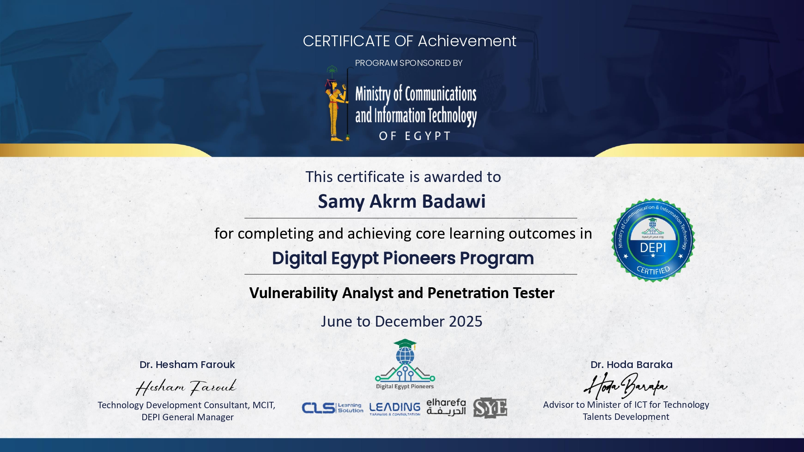
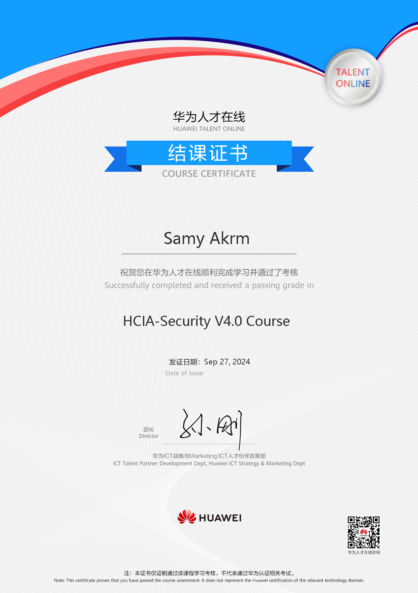

Vulnerability Analyst & Penetration Tester
Cybersecurity student at Beni-Suef National University with a sharp focus on Web Application Security and Penetration Testing. Active CTF competitor with hands-on experience analysing authentication flows, backend logic, and authorization weaknesses. Committed to growing through structured training — currently enrolled in the DEPI track — and independent research.
01 — About
I'm Samy Akrm — a cybersecurity student at Beni-Suef National University (FCAI, expected 2026) and a practising Vulnerability Analyst based in 6th of October, Egypt. My work lives at the intersection of rigorous technical analysis and real-world adversarial thinking.
My primary focus is Web Application Security. I spend significant time studying how modern web applications are built — not just to break them, but to understand the developer decisions that lead to security misconfigurations, insecure direct object references, JWT weaknesses, and access-control flaws.
I actively compete in CTF competitions, train on PortSwigger Web Security Academy, and self-study toward CompTIA Network+ and Security+ certifications. Every project I build has a deliberate learning objective — from simulating vulnerable backends to automating subdomain reconnaissance workflows.
02 — Technical Expertise
A focused skill set built through structured training, independent research, and hands-on lab work.
03 — Credentials
Formal recognition of completed training programmes and competition participation.
ITI Mahara-Tech · VMware

Digital Egypt Pioneers Initiative (DEPI) · MCIT
Zinad IT · Information Technology Institute

Huawei Talent Online
04 — Lab Work
Self-driven research projects focused on understanding real-world attack surfaces and building practical tooling.
01
Subdomain Enumeration & Takeover Detection
A Python script that automates an end-to-end reconnaissance and vulnerability-detection workflow for subdomain takeover scenarios.
02
Web Security Research · Self-Driven
A deliberately insecure backend environment built to study how authentication and authorization weaknesses manifest in real applications.
03
Database Management · Self-Driven
A relational database design project modelling the data layer of an e-commerce platform — providing foundational context for understanding SQL injection surfaces and data-flow security.
05 — Background
Formal education and structured training that underpin my security practice.
Digital Egypt Pioneers Initiative (DEPI) · Ministry of Communications (MCIT)
Intensive government-backed cybersecurity programme delivered through Egypt's Ministry of Communications, focused on applied penetration testing and vulnerability analysis.
Huawei Talent Online
Completed Huawei's HCIA-Security V4.0 course covering network security fundamentals, security architecture, and defence strategies within enterprise ICT environments.
Certificate Issued — Sep 27, 2024ITI Mahara-Tech Cybersecurity Academy · VMware
Completed structured foundational cybersecurity curriculum on the ITI Mahara-Tech platform in partnership with VMware, covering core security concepts, threat landscapes, and defensive fundamentals.
Verification Code: yy28f0npCdBeni-Suef National University · Beni-Suef, Egypt
Pursuing a degree in Computers and Artificial Intelligence at the Faculty of Computers & AI, developing foundations in computer science, algorithms, and information systems that complement hands-on security practice.
06 — Competitions & Growth
Active competition participation and self-directed study that complement formal training.
CTF Competitions
Active participant across multiple CTF competitions with a focused specialisation in Web category challenges. Competitions involve real-time exploitation of web vulnerabilities and analysis of security misconfigurations under time pressure.
Global Competition
Participated in the Global Cyber Championship organised by Zinad IT in collaboration with the Information Technology Institute (ITI) — an international cybersecurity competition designed to test real-world security skills.
Independent Learning
TryHackMe
Pre-Security Path
Web Fundamentals track
PortSwigger Academy
Web Security Academy
Active player — ongoing labs
CompTIA
Network+ & Security+
Self-study preparation
07 — Get In Touch
Open to internships, junior security roles, collaborations, and meaningful conversations about cybersecurity.
Whether you're a recruiter, a fellow security practitioner, or someone building something interesting — I'd love to hear from you. Reach out via any of the channels below.
Currently seeking internships, junior security analyst roles, and vulnerability researcher positions. Available for remote and on-site opportunities in Egypt.